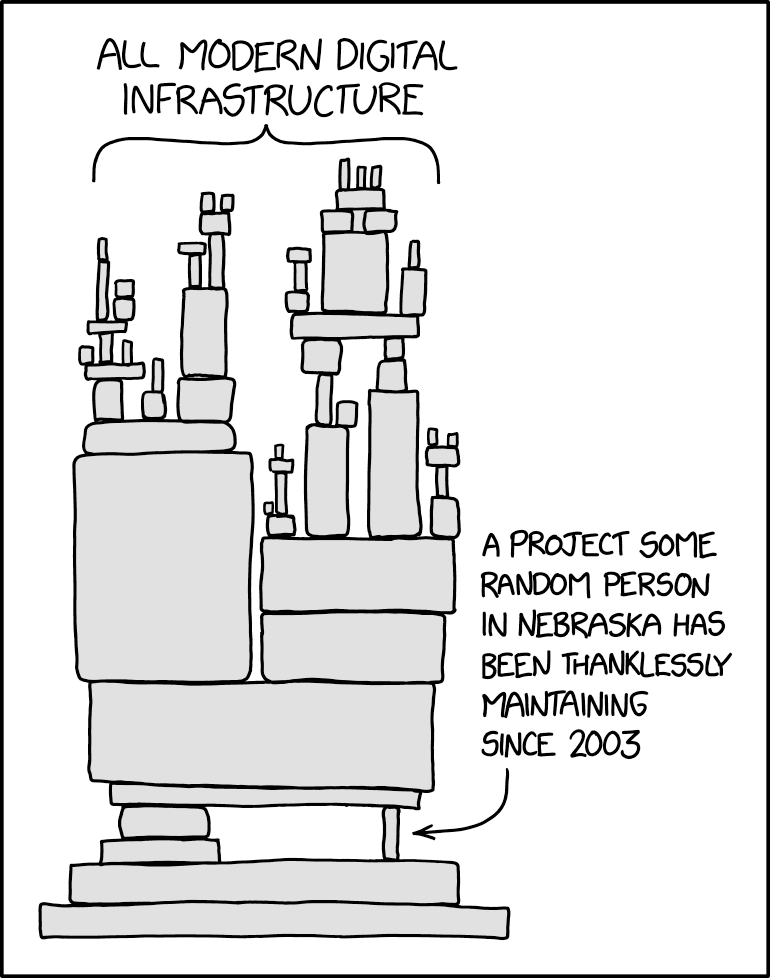

Free to download doesn't mean free to run - someone still has to install, support, and maintain it.
Organizations can either buy an existing product, or build (or commission) custom software.
| Option | Advantages | Disadvantages |
|---|---|---|
| Buy | Available now, proven, vendor handles updates | May not fit the workflow exactly; dependence on vendor |
| Build | Fits the organization's exact needs | Expensive, slow, and the organization must maintain it |
Most organizations buy for common needs (email, payroll) and consider building only for what makes them unique.
| Model | How it works | Example |
|---|---|---|
| Perpetual | Pay once, use that version indefinitely | Older boxed versions of Microsoft Office |
| Subscription | Pay monthly or yearly for continued access | Adobe Creative Cloud, Microsoft 365 |
| Per-seat | Pay per named user (or device) | Most business SaaS products |
| Site license | One fee covers everyone at an organization or campus | A university-wide statistics package |
The Total Cost of Ownership (TCO) is the full cost of a piece of software over its lifetime - not just the price tag.
Check-In: Is Free Really Free?
An office of 50 people is considering replacing a paid word processor with a free, open source alternative. List three costs that the office would still face.

Source: xkcd: Dependency (CC BY-NC 2.5)
New software rarely arrives into an empty organization. It must work alongside legacy systems - older systems that are still in use because they are critical, expensive to replace, or nobody fully understands them anymore.
A new application that can't exchange data with the existing billing, scheduling, or student records systems creates double data entry and errors.
Change management is the people side of adopting software.
The Riskiest Rollout
A big-bang rollout is the fastest and cheapest - right up until something goes wrong. Then, everyone is affected at once, and there is no old system to fall back on.
With semantic versioning, software versions are
typically written as MAJOR.MINOR.PATCH.
Software is also often labeled by release stage:
End-of-Life (EOL) Software
Every version of software eventually stops receiving updates, including security patches. Running EOL software is a common cause of security breaches - if you're still using something past its support lifecycle, it's time to upgrade.
Check-In: Major, Minor, or Patch?
Match each change below to the correct type of version bump: Major, Minor, or Patch.